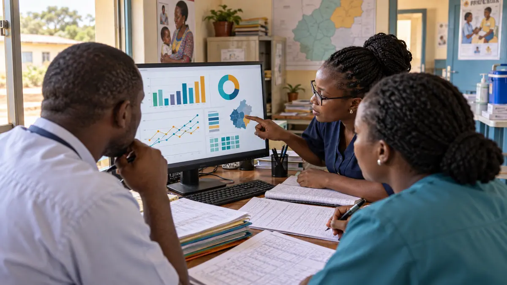

Health systems are adopting dashboards, electronic records, mobile reporting platforms, telehealth and artificial intelligence. Yet the value of these tools depends on something less visible: whether the people expected to use them can do so confidently, critically and responsibly.
That capability is digital health literacy. For public health professionals, it is no longer an optional technical interest. It is becoming part of the everyday work of collecting reliable information, interpreting trends, protecting sensitive data, communicating evidence and making decisions.
What digital health literacy means
Digital health literacy is more than knowing how to operate a computer or smartphone. In professional practice, it combines the knowledge, judgment and confidence needed to find, create, interpret, share and protect health information using digital tools.
It includes basic device skills, but it also includes data quality, information appraisal, privacy, cybersecurity, digital communication and an understanding of what technologies can and cannot do. The World Health Organization’s work on digital health competency frameworks emphasizes that workforce education must prepare professionals for increasingly digital health systems. WHO’s African regional overview likewise notes that digital health supports health workforce education, disease tracking, research and public health monitoring.
A digitally literate public health professional does not need to become a software engineer. The goal is to use technology appropriately within a professional role, recognize risks and limitations, and know when specialist support is required.
Why it matters for public health
Public health depends on information. Teams monitor indicators, investigate outbreaks, coordinate programs, prepare reports, identify service gaps and evaluate results. Each activity now has a growing digital component.
When digital literacy is weak, a technically sound system can still produce poor results. Data may be entered inconsistently. A dashboard may be viewed without its limitations being understood. Sensitive information may be shared through an insecure channel. An automated output may be accepted without checking the source data or underlying assumptions.
When digital literacy is strong, professionals can ask better questions. Is this indicator complete? What population does it represent? Is the change meaningful or the result of a reporting gap? Who is authorized to see this information? What action should follow from the finding?
This is the difference between access to technology and effective use of technology.
Seven capabilities that make digital health useful
1. Producing reliable data
Every dashboard and model depends on the quality of the information beneath it. Professionals need to understand completeness, consistency, timeliness, definitions and validation. Correcting a data quality problem at the point of collection is often more valuable than creating a sophisticated visualization from unreliable records.
2. Interpreting dashboards and indicators
A chart is not a decision. Professionals should be able to compare periods, recognize unusual patterns, consider denominators, distinguish correlation from causation and connect a finding to its program context. Visual literacy helps teams move from “the number changed” to “what might explain the change, and what should we investigate next?”

3. Protecting privacy and security
Health information can be deeply sensitive. Digital literacy includes using strong authentication, controlling access, recognizing suspicious messages, following approved data sharing processes and collecting only the information that is needed. Privacy should not be treated as an IT department issue alone. It is a professional responsibility shared across the health system.
4. Evaluating digital information
Professionals encounter research summaries, online guidance, social media claims and generated content. They need to check authorship, evidence, date, relevance and possible bias before using or sharing information. Speed should never replace verification when health decisions are involved.
5. Using AI with informed caution
Artificial intelligence can help summarize documents, explore data, support communication and reduce repetitive work. It can also produce confident errors, reproduce bias or expose information when used carelessly. WHO’s guidance on ethics and governance of AI for health calls for human autonomy, transparency, accountability, safety and equity. AI literacy therefore means knowing how to check outputs, protect data and keep qualified human judgment in control.
6. Communicating insights clearly
Digital tools are useful only when their outputs can be understood and acted upon. A public health professional may need to explain a trend to community leaders, managers, clinicians or partners with different levels of technical knowledge. Clear language, appropriate visuals and honest communication of uncertainty are core digital capabilities.
7. Improving workflows, not adding burden
A new tool should fit the people, decisions and constraints around it. Professionals who understand the workflow can identify duplicated entry, unnecessary steps, missing feedback and opportunities for automation. They can also recognize when a paper process remains necessary because connectivity, maintenance or support is unreliable.
The African context requires practical design
Africa is not one health system, and digital readiness differs across and within countries. Still, many teams work with a familiar combination of limited connectivity, uneven access to devices, fragmented platforms, variable data quality, heavy workloads and limited time for training.
These realities do not reduce the case for digital health. They shape how it should be introduced. Tools should work within available infrastructure, integrate where possible, support offline or low bandwidth conditions when needed and reflect local languages and workflows. Training should be continuous rather than confined to a launch event.
WHO’s 2026 assessment of the African health workforce recommends integrating digital health and AI competencies into workforce planning and training. The principle is important: capacity development should be designed as part of digital transformation, not added after a system has already been procured.
What health organizations can do
Organizations can strengthen digital health literacy without expecting every employee to master the same skills.
- Assess skills by role. A community health worker, district information officer, program manager and policy leader need different levels of capability.
- Teach through real tasks. Use familiar indicators, reporting workflows and decisions rather than generic software demonstrations.
- Create protected learning time. Staff cannot develop confidence if training is added to an already full workload without support.
- Build peer support. Local champions and communities of practice can solve everyday problems and reduce dependence on occasional external training.
- Include privacy, security and ethics. These should be embedded in every digital learning program.
- Measure practical outcomes. Look for improvements in data quality, reporting time, interpretation, confidence and decision making, not only course completion.
A starting roadmap for professionals
For an individual public health professional, the path can begin with one recurring problem. Choose a reporting process, dataset or communication task that consumes time or creates confusion. Learn the digital skill most relevant to that problem. Apply it on a small scale, document what changed and ask colleagues for feedback.
A useful sequence is to strengthen spreadsheet and data quality skills, learn basic visualization, develop privacy and cybersecurity habits, then explore automation or AI with appropriate safeguards. This creates depth before complexity.
Do not learn technology only because it is popular. Learn it in relation to a problem you understand and a decision you want to improve.
Conclusion
The future of public health will not be shaped by technology alone. It will be shaped by professionals who understand health needs and can use technology with evidence, context and responsibility.
Digital health literacy gives professionals the ability to participate in that future rather than simply receive it. It helps them produce more trustworthy data, ask better questions, protect the people represented in health records and turn information into action.
For African health systems, investing in digital tools and investing in people must be treated as the same transformation. A platform can be installed quickly. The confidence, judgment and shared practices required to use it well must be built deliberately.
Let’s build digital capability around real health needs.
If you work in public health, health data, workforce development or responsible digital innovation, I would be glad to exchange ideas or explore collaboration.
Contact Me ↗